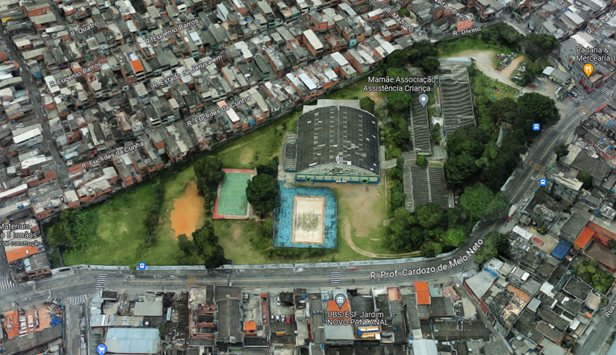

A OSC CCInter iniciou sua atividade em novembro de 1965, completou em 2022, 57 anos de serviços prestados à comunidade. Surge como uma pequena história, com a vontade de senhoras da comunidade de Santo Amaro de proporcionar um local seguro às crianças enquanto suas mães trabalhavam para ganhar seu sustento. Estamos nas décadas de 60 e 70, quando ainda se acreditava que nós, entidades sociais, sabíamos o que seria melhor para essa população. Para conhecer cada área, basta clicar sobre o prédio na imagem.